process fits, save results (iterative)#
host = any, device = cuda:1
Motivation:
From Dropbox/chkpts/_TemporalSC to ../tmp/results_2025-08
Show code cell source
# HIDE CODE
project_name = '_TemporalSC'
import os, sys
from IPython.display import display
# tmp & extras dir
git_dir = os.path.join(os.environ['HOME'], 'Dropbox/git')
extras_dir = os.path.join(git_dir, 'jb-progress-2025/_extras')
fig_base_dir = os.path.join(git_dir, 'jb-progress-2025/figs')
tmp_dir = os.path.join(git_dir, 'jb-progress-2025/tmp')
# GitHub
sys.path.insert(0, os.path.join(git_dir, project_name))
from figures.convergence import plot_convergence
from main.config_defaults import default_configs
from figures.fighelper import *
from main.train import *
# warnings, tqdm, & style
warnings.filterwarnings('ignore', category=DeprecationWarning)
warnings.filterwarnings('ignore', category=FutureWarning)
warnings.filterwarnings('ignore', category=UserWarning)
from rich.jupyter import print
%matplotlib inline
set_style()
from analysis.final import perform_analysis, get_root_path
device_idx = 1
device = f'cuda:{device_idx}'
print(f"device: {device} ——— host: {os.uname().nodename}")
device: cuda:1 ——— host: yoru
Results dir#
root = get_root_path()
results_dir = pjoin(tmp_dir, 'results_2025-08')
os.makedirs(results_dir, exist_ok=True)
print(root)
len(os.listdir(results_dir))
/home/hadi/Dropbox/chkpts/_TemporalSC
170
Select fits#
cond = lambda f: 'vH16-wht' in f and 'recon-' in f and 'mach' not in f
fits = sorted(os.listdir(root), key=alphanum_sort_key)
fits = [f for f in fits if cond(f)]
len(fits)
61
print(fits)
[ 'poisson_<ngd|lin>_vH16-wht_t-(16,1)_b-0.1_kms-(512,1,1)_ipc-recon-mse_dt-False-sigma-False_mach-0_(2025_08_20, 16:13)', 'poisson_<ngd|lin>_vH16-wht_t-(16,1)_b-0.1_kms-(512,1,1)_ipc-recon-mse_dt-False-sigma-True_mach-0_(2025_08_20,1 6:13)', 'poisson_<ngd|lin>_vH16-wht_t-(16,1)_b-0.1_kms-(512,1,1)_ipc-recon-mse_dt-True-sigma-False_mach-0_(2025_08_20,1 6:13)', 'poisson_<ngd|lin>_vH16-wht_t-(16,1)_b-0.1_kms-(512,1,1)_ipc-recon-mse_dt-True-sigma-True_mach-0_(2025_08_20,16 :13)', 'poisson_<ngd|lin>_vH16-wht_t-(16,1)_b-0.1_kms-(512,1,1)_ipc-recon-prob_dt-False-sigma-False_mach-0_(2025_08_21 ,00:57)', 'poisson_<ngd|lin>_vH16-wht_t-(16,1)_b-0.1_kms-(512,1,1)_ipc-recon-prob_dt-False-sigma-True_mach-0_(2025_08_21, 05:04)', 'poisson_<ngd|lin>_vH16-wht_t-(16,1)_b-0.1_kms-(512,1,1)_ipc-recon-prob_dt-True-sigma-False_mach-0_(2025_08_21, 02:03)', 'poisson_<ngd|lin>_vH16-wht_t-(16,1)_b-0.1_kms-(512,1,1)_ipc-recon-prob_dt-True-sigma-True_mach-0_(2025_08_21,0 4:26)', 'poisson_<ngd|lin>_vH16-wht_t-(16,1)_b-0.5_kms-(512,1,1)_ipc-recon-mse_dt-False-sigma-False_mach-0_(2025_08_21, 00:57)', 'poisson_<ngd|lin>_vH16-wht_t-(16,1)_b-0.5_kms-(512,1,1)_ipc-recon-mse_dt-False-sigma-True_mach-0_(2025_08_21,0 5:00)', 'poisson_<ngd|lin>_vH16-wht_t-(16,1)_b-0.5_kms-(512,1,1)_ipc-recon-mse_dt-True-sigma-False_mach-0_(2025_08_21,0 2:01)', 'poisson_<ngd|lin>_vH16-wht_t-(16,1)_b-0.5_kms-(512,1,1)_ipc-recon-mse_dt-True-sigma-True_mach-0_(2025_08_21,04 :27)', 'poisson_<ngd|lin>_vH16-wht_t-(16,1)_b-0.5_kms-(512,1,1)_ipc-recon-prob_dt-False-sigma-False_mach-0_(2025_08_20 ,16:13)', 'poisson_<ngd|lin>_vH16-wht_t-(16,1)_b-0.5_kms-(512,1,1)_ipc-recon-prob_dt-False-sigma-True_mach-0_(2025_08_20, 16:13)', 'poisson_<ngd|lin>_vH16-wht_t-(16,1)_b-0.5_kms-(512,1,1)_ipc-recon-prob_dt-True-sigma-False_mach-0_(2025_08_20, 16:13)', 'poisson_<ngd|lin>_vH16-wht_t-(16,1)_b-0.5_kms-(512,1,1)_ipc-recon-prob_dt-True-sigma-True_mach-0_(2025_08_20,1 6:13)', 'poisson_<ngd|lin>_vH16-wht_t-(16,1)_b-1_kms-(512,1,1)_ipc-recon-mse_dt-False-sigma-False_mach-0_(2025_08_20,16 :13)', 'poisson_<ngd|lin>_vH16-wht_t-(16,1)_b-1_kms-(512,1,1)_ipc-recon-mse_dt-False-sigma-True_mach-0_(2025_08_20,16: 13)', 'poisson_<ngd|lin>_vH16-wht_t-(16,1)_b-1_kms-(512,1,1)_ipc-recon-mse_dt-True-sigma-False_mach-0_(2025_08_20,16: 13)', 'poisson_<ngd|lin>_vH16-wht_t-(16,1)_b-1_kms-(512,1,1)_ipc-recon-mse_dt-True-sigma-True_mach-0_(2025_08_20,16:1 3)', 'poisson_<ngd|lin>_vH16-wht_t-(16,1)_b-1_kms-(512,1,1)_ipc-recon-prob_dt-False-sigma-False_mach-0_(2025_08_21,0 1:01)', 'poisson_<ngd|lin>_vH16-wht_t-(16,1)_b-1_kms-(512,1,1)_ipc-recon-prob_dt-False-sigma-True_mach-0_(2025_08_21,05 :52)', 'poisson_<ngd|lin>_vH16-wht_t-(16,1)_b-1_kms-(512,1,1)_ipc-recon-prob_dt-True-sigma-False_mach-0_(2025_08_21,02 :04)', 'poisson_<ngd|lin>_vH16-wht_t-(16,1)_b-1_kms-(512,1,1)_ipc-recon-prob_dt-True-sigma-True_mach-0_(2025_08_21,04: 50)', 'poisson_<ngd|lin>_vH16-wht_t-(16,1)_b-2_kms-(512,1,1)_ipc-recon-mse_dt-False-sigma-False_mach-0_(2025_08_21,00 :56)', 'poisson_<ngd|lin>_vH16-wht_t-(16,1)_b-2_kms-(512,1,1)_ipc-recon-mse_dt-False-sigma-True_mach-0_(2025_08_21,04: 58)', 'poisson_<ngd|lin>_vH16-wht_t-(16,1)_b-2_kms-(512,1,1)_ipc-recon-mse_dt-True-sigma-False_mach-0_(2025_08_21,02: 01)', 'poisson_<ngd|lin>_vH16-wht_t-(16,1)_b-2_kms-(512,1,1)_ipc-recon-mse_dt-True-sigma-True_mach-0_(2025_08_21,04:2 2)', 'poisson_<ngd|lin>_vH16-wht_t-(16,1)_b-2_kms-(512,1,1)_ipc-recon-prob_dt-False-sigma-False_mach-0_(2025_08_20,1 6:13)', 'poisson_<ngd|lin>_vH16-wht_t-(16,1)_b-2_kms-(512,1,1)_ipc-recon-prob_dt-False-sigma-True_mach-0_(2025_08_20,16 :13)', 'poisson_<ngd|lin>_vH16-wht_t-(16,1)_b-2_kms-(512,1,1)_ipc-recon-prob_dt-True-sigma-False_mach-0_(2025_08_20,16 :13)', 'poisson_<ngd|lin>_vH16-wht_t-(16,1)_b-2_kms-(512,1,1)_ipc-recon-prob_dt-True-sigma-True_mach-0_(2025_08_20,16: 13)', 'poisson_<ngd|lin>_vH16-wht_t-(16,1)_b-4_kms-(512,1,1)_ipc-recon-mse_dt-False-sigma-False_mach-0_(2025_08_20,16 :13)', 'poisson_<ngd|lin>_vH16-wht_t-(16,1)_b-4_kms-(512,1,1)_ipc-recon-mse_dt-False-sigma-True_mach-0_(2025_08_20,16: 13)', 'poisson_<ngd|lin>_vH16-wht_t-(16,1)_b-4_kms-(512,1,1)_ipc-recon-mse_dt-True-sigma-False_mach-0_(2025_08_20,16: 13)', 'poisson_<ngd|lin>_vH16-wht_t-(16,1)_b-4_kms-(512,1,1)_ipc-recon-mse_dt-True-sigma-True_mach-0_(2025_08_20,16:1 3)', 'poisson_<ngd|lin>_vH16-wht_t-(16,1)_b-4_kms-(512,1,1)_ipc-recon-prob_dt-False-sigma-False_mach-0_(2025_08_21,0 1:00)', 'poisson_<ngd|lin>_vH16-wht_t-(16,1)_b-4_kms-(512,1,1)_ipc-recon-prob_dt-False-sigma-True_mach-0_(2025_08_21,05 :13)', 'poisson_<ngd|lin>_vH16-wht_t-(16,1)_b-4_kms-(512,1,1)_ipc-recon-prob_dt-True-sigma-False_mach-0_(2025_08_21,02 :11)', 'poisson_<ngd|lin>_vH16-wht_t-(16,1)_b-4_kms-(512,1,1)_ipc-recon-prob_dt-True-sigma-True_mach-0_(2025_08_21,04: 41)' ]
Run analysis loop#
%%time
perform_analysis(results_dir, device, fits, override_fits=False)
0%| | 0/40 [00:00<?, ?it/s]
[PROGRESS] 'poisson_<ngd|lin>_vH16-wht_t-(16,1)_b-0.1_kms-(512,1,1)_ipc-recon-mse_dt-False-sigma-False_mach-0_(2025_08_20,16:1 3).npy' saved at /home/hadi/Dropbox/git/jb-progress-2025/tmp/results_2025-08
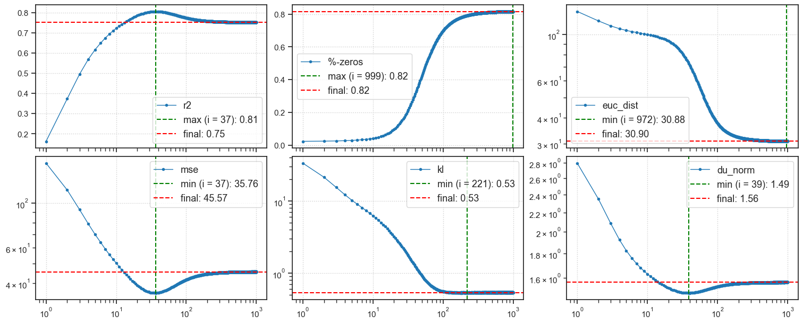
----------------------------------------------------------------------------------------------------
2%|█ | 1/40 [03:37<2:21:06, 217.10s/it]
[PROGRESS] 'poisson_<ngd|lin>_vH16-wht_t-(16,1)_b-0.1_kms-(512,1,1)_ipc-recon-mse_dt-False-sigma-True_mach-0_(2025_08_20,16:13 ).npy' saved at /home/hadi/Dropbox/git/jb-progress-2025/tmp/results_2025-08
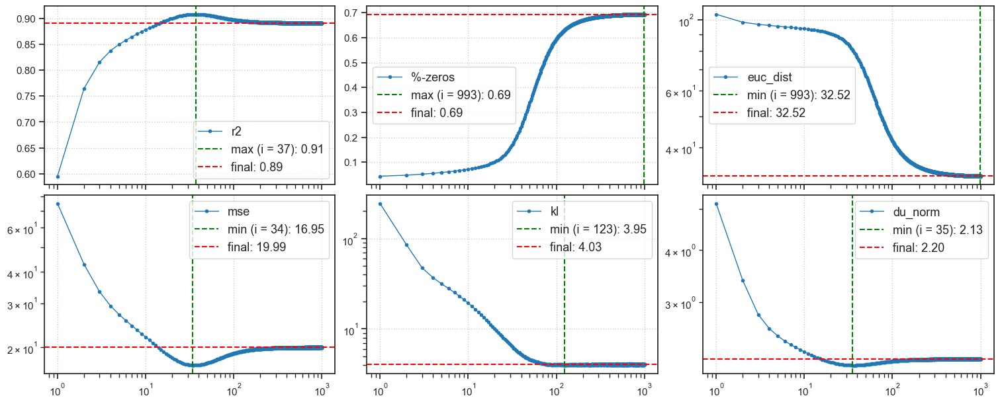
----------------------------------------------------------------------------------------------------
5%|██ | 2/40 [07:17<2:18:41, 218.98s/it]
[PROGRESS] 'poisson_<ngd|lin>_vH16-wht_t-(16,1)_b-0.1_kms-(512,1,1)_ipc-recon-mse_dt-True-sigma-False_mach-0_(2025_08_20,16:13 ).npy' saved at /home/hadi/Dropbox/git/jb-progress-2025/tmp/results_2025-08
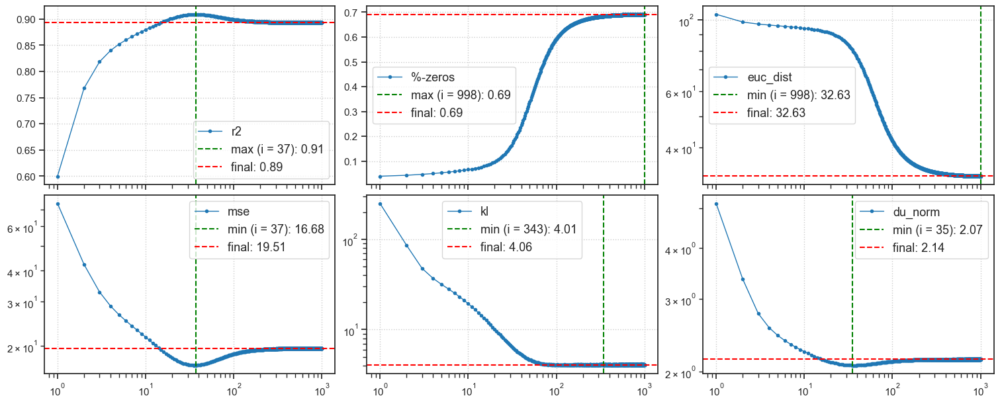
----------------------------------------------------------------------------------------------------
8%|███ | 3/40 [10:57<2:15:23, 219.54s/it]
[PROGRESS] 'poisson_<ngd|lin>_vH16-wht_t-(16,1)_b-0.1_kms-(512,1,1)_ipc-recon-mse_dt-True-sigma-True_mach-0_(2025_08_20,16:13) .npy' saved at /home/hadi/Dropbox/git/jb-progress-2025/tmp/results_2025-08
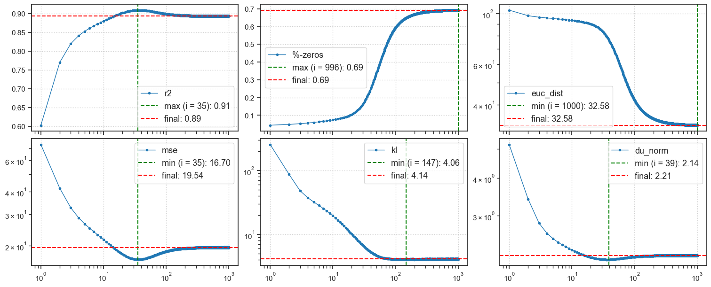
----------------------------------------------------------------------------------------------------
10%|████ | 4/40 [14:37<2:11:51, 219.76s/it]
[PROGRESS] 'poisson_<ngd|lin>_vH16-wht_t-(16,1)_b-0.1_kms-(512,1,1)_ipc-recon-prob_dt-False-sigma-False_mach-0_(2025_08_21,00: 57).npy' saved at /home/hadi/Dropbox/git/jb-progress-2025/tmp/results_2025-08
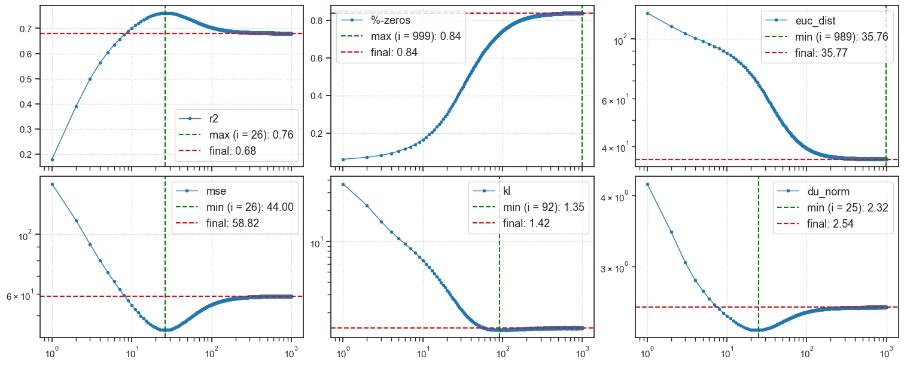
----------------------------------------------------------------------------------------------------
12%|█████▏ | 5/40 [18:16<2:08:02, 219.49s/it]
[PROGRESS] 'poisson_<ngd|lin>_vH16-wht_t-(16,1)_b-0.1_kms-(512,1,1)_ipc-recon-prob_dt-False-sigma-True_mach-0_(2025_08_21,05:0 4).npy' saved at /home/hadi/Dropbox/git/jb-progress-2025/tmp/results_2025-08
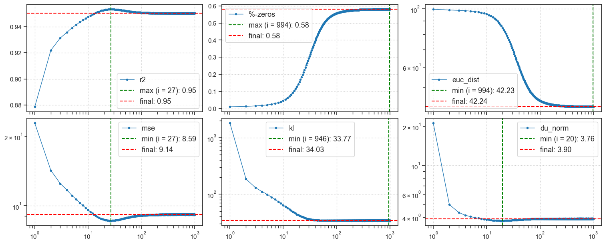
----------------------------------------------------------------------------------------------------
15%|██████▏ | 6/40 [21:59<2:05:03, 220.68s/it]
[PROGRESS] 'poisson_<ngd|lin>_vH16-wht_t-(16,1)_b-0.1_kms-(512,1,1)_ipc-recon-prob_dt-True-sigma-False_mach-0_(2025_08_21,02:0 3).npy' saved at /home/hadi/Dropbox/git/jb-progress-2025/tmp/results_2025-08
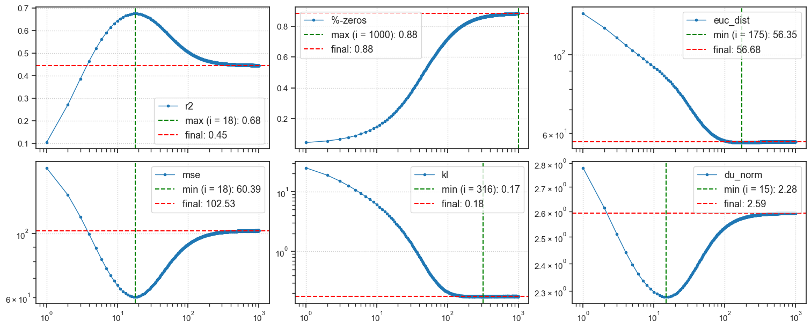
----------------------------------------------------------------------------------------------------
18%|███████▏ | 7/40 [25:38<2:01:04, 220.14s/it]
[PROGRESS] 'poisson_<ngd|lin>_vH16-wht_t-(16,1)_b-0.1_kms-(512,1,1)_ipc-recon-prob_dt-True-sigma-True_mach-0_(2025_08_21,04:26 ).npy' saved at /home/hadi/Dropbox/git/jb-progress-2025/tmp/results_2025-08
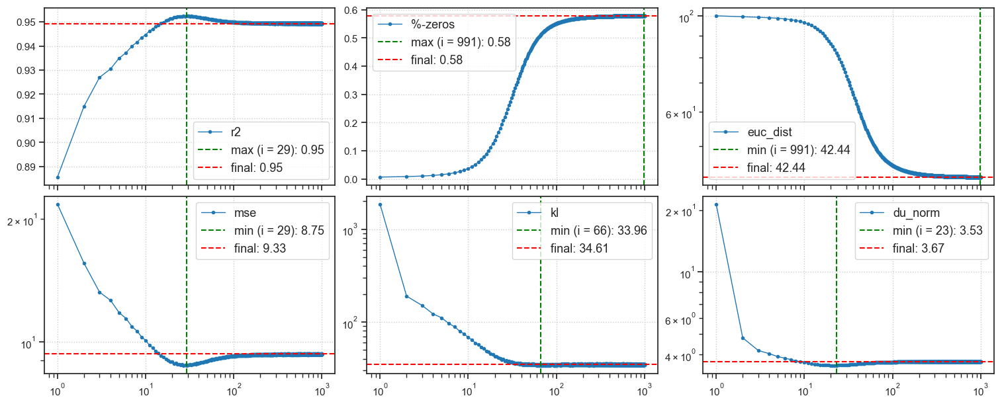
----------------------------------------------------------------------------------------------------
20%|████████▏ | 8/40 [29:21<1:57:48, 220.89s/it]
[PROGRESS] 'poisson_<ngd|lin>_vH16-wht_t-(16,1)_b-0.5_kms-(512,1,1)_ipc-recon-mse_dt-False-sigma-False_mach-0_(2025_08_21,00:5 7).npy' saved at /home/hadi/Dropbox/git/jb-progress-2025/tmp/results_2025-08
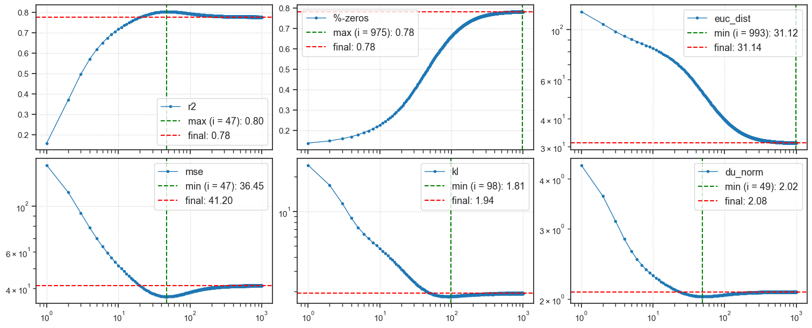
----------------------------------------------------------------------------------------------------
22%|█████████▏ | 9/40 [32:59<1:53:42, 220.09s/it]
[PROGRESS] 'poisson_<ngd|lin>_vH16-wht_t-(16,1)_b-0.5_kms-(512,1,1)_ipc-recon-mse_dt-False-sigma-True_mach-0_(2025_08_21,05:00 ).npy' saved at /home/hadi/Dropbox/git/jb-progress-2025/tmp/results_2025-08
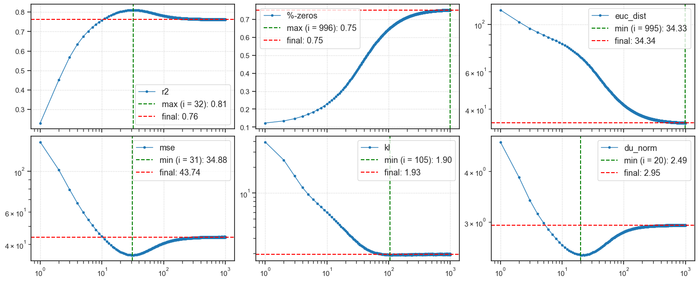
----------------------------------------------------------------------------------------------------
25%|██████████ | 10/40 [36:38<1:49:49, 219.67s/it]
[PROGRESS] 'poisson_<ngd|lin>_vH16-wht_t-(16,1)_b-0.5_kms-(512,1,1)_ipc-recon-mse_dt-True-sigma-False_mach-0_(2025_08_21,02:01 ).npy' saved at /home/hadi/Dropbox/git/jb-progress-2025/tmp/results_2025-08
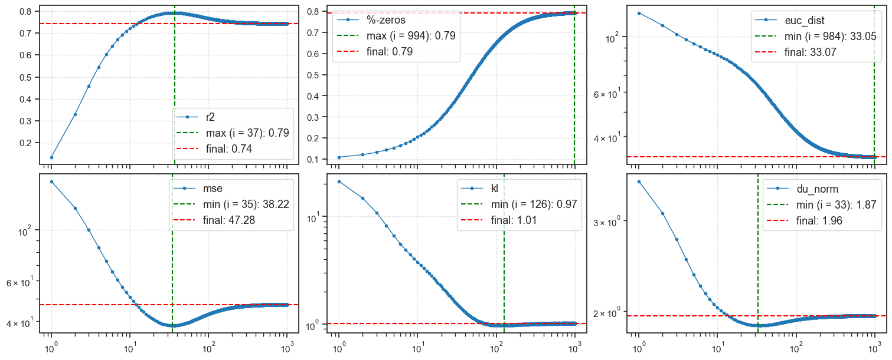
----------------------------------------------------------------------------------------------------
28%|███████████ | 11/40 [40:16<1:46:00, 219.33s/it]
[PROGRESS] 'poisson_<ngd|lin>_vH16-wht_t-(16,1)_b-0.5_kms-(512,1,1)_ipc-recon-mse_dt-True-sigma-True_mach-0_(2025_08_21,04:27) .npy' saved at /home/hadi/Dropbox/git/jb-progress-2025/tmp/results_2025-08
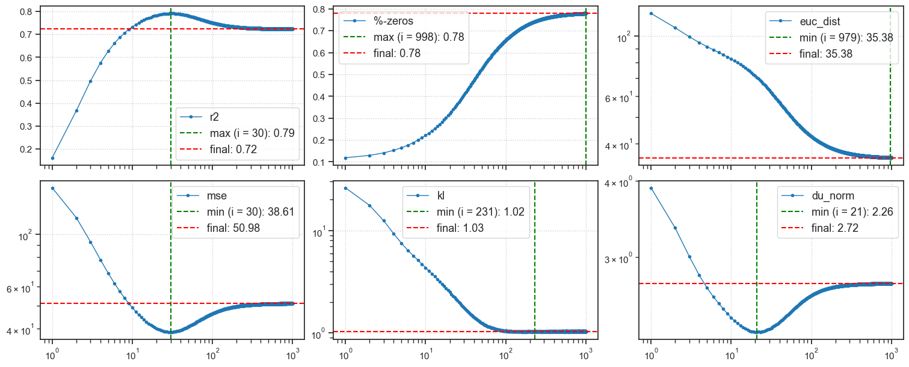
----------------------------------------------------------------------------------------------------
30%|████████████ | 12/40 [43:55<1:42:15, 219.11s/it]
[PROGRESS] 'poisson_<ngd|lin>_vH16-wht_t-(16,1)_b-0.5_kms-(512,1,1)_ipc-recon-prob_dt-False-sigma-False_mach-0_(2025_08_20,16: 13).npy' saved at /home/hadi/Dropbox/git/jb-progress-2025/tmp/results_2025-08
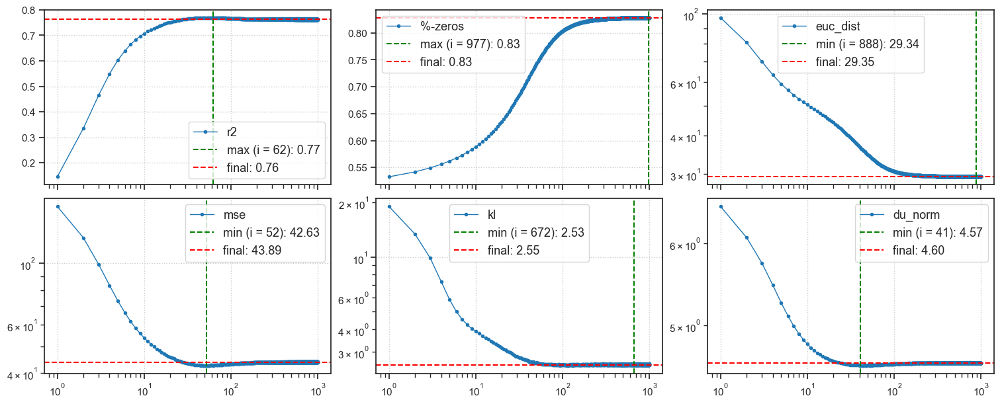
----------------------------------------------------------------------------------------------------
32%|█████████████ | 13/40 [47:34<1:38:35, 219.11s/it]
[PROGRESS] 'poisson_<ngd|lin>_vH16-wht_t-(16,1)_b-0.5_kms-(512,1,1)_ipc-recon-prob_dt-False-sigma-True_mach-0_(2025_08_20,16:1 3).npy' saved at /home/hadi/Dropbox/git/jb-progress-2025/tmp/results_2025-08
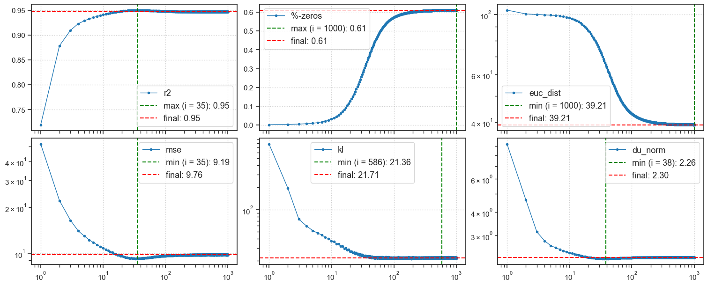
----------------------------------------------------------------------------------------------------
35%|██████████████ | 14/40 [51:16<1:35:16, 219.87s/it]
[PROGRESS] 'poisson_<ngd|lin>_vH16-wht_t-(16,1)_b-0.5_kms-(512,1,1)_ipc-recon-prob_dt-True-sigma-False_mach-0_(2025_08_20,16:1 3).npy' saved at /home/hadi/Dropbox/git/jb-progress-2025/tmp/results_2025-08
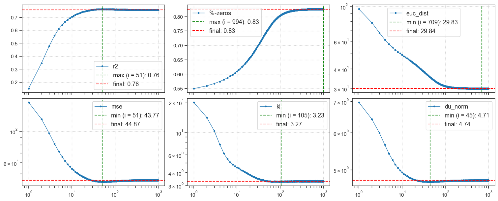
----------------------------------------------------------------------------------------------------
38%|███████████████ | 15/40 [54:55<1:31:30, 219.63s/it]
[PROGRESS] 'poisson_<ngd|lin>_vH16-wht_t-(16,1)_b-0.5_kms-(512,1,1)_ipc-recon-prob_dt-True-sigma-True_mach-0_(2025_08_20,16:13 ).npy' saved at /home/hadi/Dropbox/git/jb-progress-2025/tmp/results_2025-08
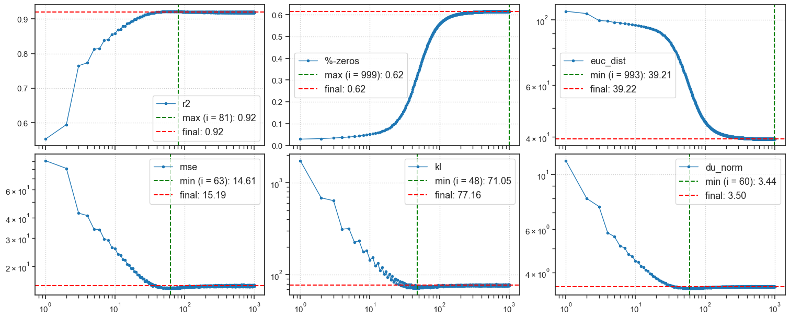
----------------------------------------------------------------------------------------------------
40%|████████████████ | 16/40 [58:36<1:28:00, 220.04s/it]
[PROGRESS] 'poisson_<ngd|lin>_vH16-wht_t-(16,1)_b-1_kms-(512,1,1)_ipc-recon-mse_dt-False-sigma-False_mach-0_(2025_08_20,16:13) .npy' saved at /home/hadi/Dropbox/git/jb-progress-2025/tmp/results_2025-08
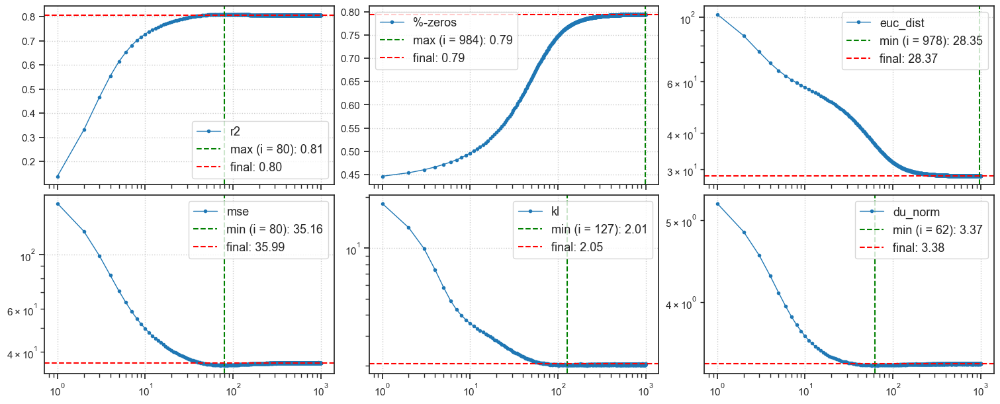
----------------------------------------------------------------------------------------------------
42%|████████████████▏ | 17/40 [1:02:14<1:24:09, 219.56s/it]
[PROGRESS] 'poisson_<ngd|lin>_vH16-wht_t-(16,1)_b-1_kms-(512,1,1)_ipc-recon-mse_dt-False-sigma-True_mach-0_(2025_08_20,16:13). npy' saved at /home/hadi/Dropbox/git/jb-progress-2025/tmp/results_2025-08
----------------------------------------------------------------------------------------------------
45%|█████████████████ | 18/40 [1:05:53<1:20:23, 219.25s/it]
[PROGRESS] 'poisson_<ngd|lin>_vH16-wht_t-(16,1)_b-1_kms-(512,1,1)_ipc-recon-mse_dt-True-sigma-False_mach-0_(2025_08_20,16:13). npy' saved at /home/hadi/Dropbox/git/jb-progress-2025/tmp/results_2025-08
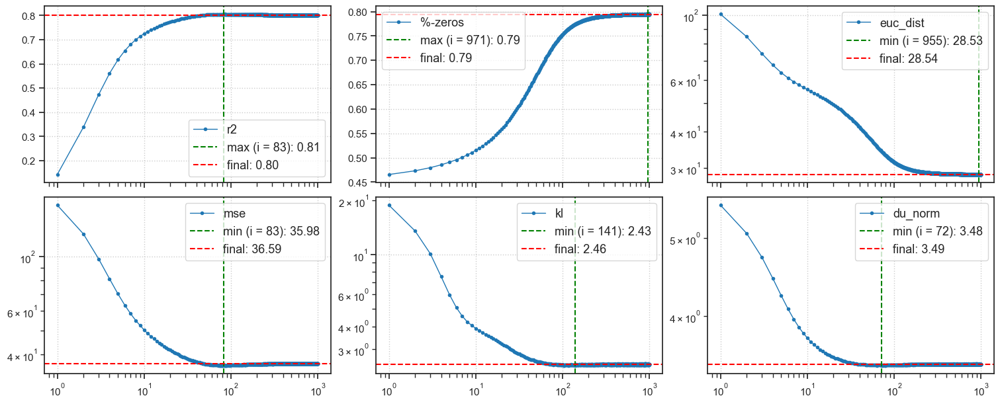
----------------------------------------------------------------------------------------------------
48%|██████████████████ | 19/40 [1:09:31<1:16:39, 219.02s/it]
[PROGRESS] 'poisson_<ngd|lin>_vH16-wht_t-(16,1)_b-1_kms-(512,1,1)_ipc-recon-mse_dt-True-sigma-True_mach-0_(2025_08_20,16:13).n py' saved at /home/hadi/Dropbox/git/jb-progress-2025/tmp/results_2025-08
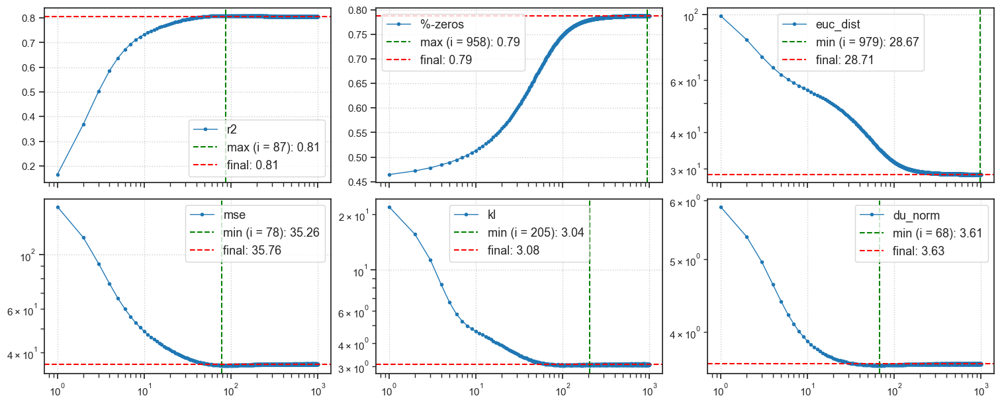
----------------------------------------------------------------------------------------------------
50%|███████████████████ | 20/40 [1:13:10<1:12:58, 218.90s/it]
[PROGRESS] 'poisson_<ngd|lin>_vH16-wht_t-(16,1)_b-1_kms-(512,1,1)_ipc-recon-prob_dt-False-sigma-False_mach-0_(2025_08_21,01:01 ).npy' saved at /home/hadi/Dropbox/git/jb-progress-2025/tmp/results_2025-08
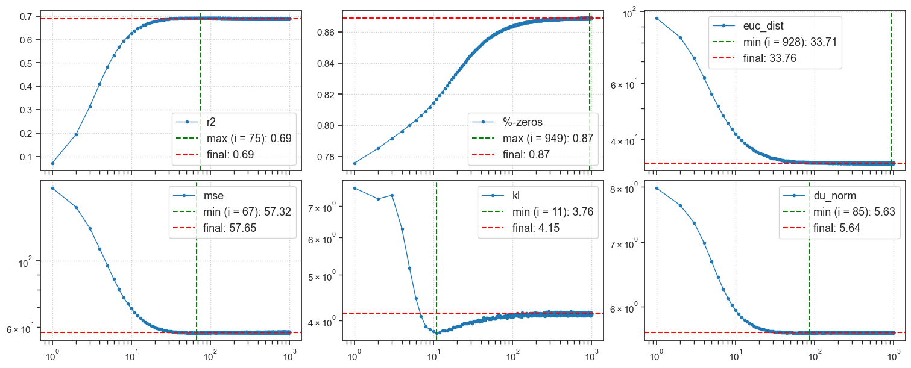
----------------------------------------------------------------------------------------------------
52%|███████████████████▉ | 21/40 [1:16:49<1:09:19, 218.94s/it]
[PROGRESS] 'poisson_<ngd|lin>_vH16-wht_t-(16,1)_b-1_kms-(512,1,1)_ipc-recon-prob_dt-False-sigma-True_mach-0_(2025_08_21,05:52) .npy' saved at /home/hadi/Dropbox/git/jb-progress-2025/tmp/results_2025-08
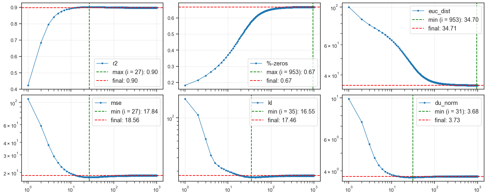
----------------------------------------------------------------------------------------------------
55%|████████████████████▉ | 22/40 [1:20:29<1:05:48, 219.38s/it]
[PROGRESS] 'poisson_<ngd|lin>_vH16-wht_t-(16,1)_b-1_kms-(512,1,1)_ipc-recon-prob_dt-True-sigma-False_mach-0_(2025_08_21,02:04) .npy' saved at /home/hadi/Dropbox/git/jb-progress-2025/tmp/results_2025-08
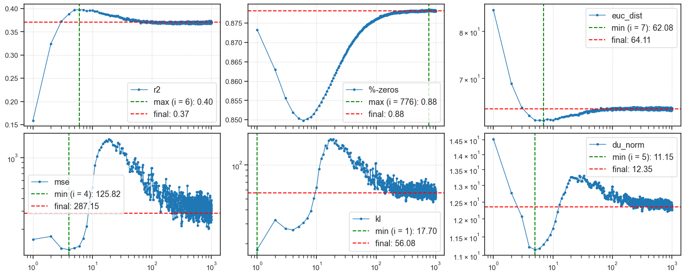
----------------------------------------------------------------------------------------------------
57%|█████████████████████▊ | 23/40 [1:24:08<1:02:08, 219.30s/it]
[PROGRESS] 'poisson_<ngd|lin>_vH16-wht_t-(16,1)_b-1_kms-(512,1,1)_ipc-recon-prob_dt-True-sigma-True_mach-0_(2025_08_21,04:50). npy' saved at /home/hadi/Dropbox/git/jb-progress-2025/tmp/results_2025-08
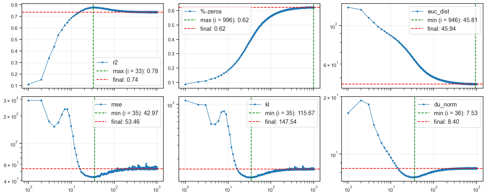
----------------------------------------------------------------------------------------------------
60%|████████████████████████ | 24/40 [1:27:49<58:33, 219.58s/it]
[PROGRESS] 'poisson_<ngd|lin>_vH16-wht_t-(16,1)_b-2_kms-(512,1,1)_ipc-recon-mse_dt-False-sigma-False_mach-0_(2025_08_21,00:56) .npy' saved at /home/hadi/Dropbox/git/jb-progress-2025/tmp/results_2025-08
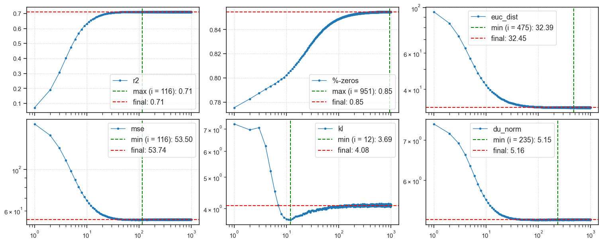
----------------------------------------------------------------------------------------------------
62%|█████████████████████████ | 25/40 [1:31:27<54:48, 219.26s/it]
[PROGRESS] 'poisson_<ngd|lin>_vH16-wht_t-(16,1)_b-2_kms-(512,1,1)_ipc-recon-mse_dt-False-sigma-True_mach-0_(2025_08_21,04:58). npy' saved at /home/hadi/Dropbox/git/jb-progress-2025/tmp/results_2025-08
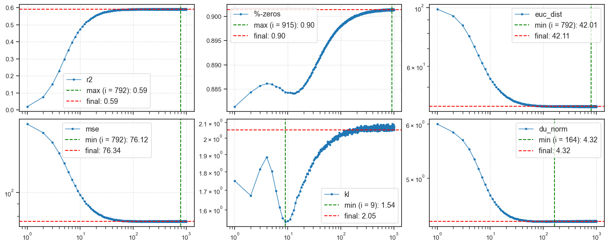
----------------------------------------------------------------------------------------------------
65%|██████████████████████████ | 26/40 [1:35:06<51:06, 219.01s/it]
[PROGRESS] 'poisson_<ngd|lin>_vH16-wht_t-(16,1)_b-2_kms-(512,1,1)_ipc-recon-mse_dt-True-sigma-False_mach-0_(2025_08_21,02:01). npy' saved at /home/hadi/Dropbox/git/jb-progress-2025/tmp/results_2025-08
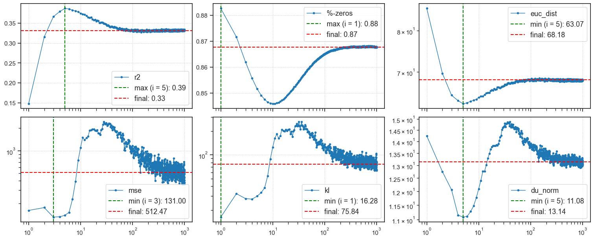
----------------------------------------------------------------------------------------------------
68%|███████████████████████████ | 27/40 [1:38:44<47:25, 218.85s/it]
[PROGRESS] 'poisson_<ngd|lin>_vH16-wht_t-(16,1)_b-2_kms-(512,1,1)_ipc-recon-mse_dt-True-sigma-True_mach-0_(2025_08_21,04:22).n py' saved at /home/hadi/Dropbox/git/jb-progress-2025/tmp/results_2025-08
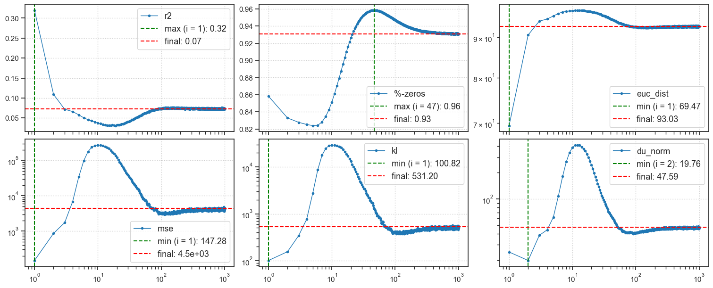
----------------------------------------------------------------------------------------------------
70%|████████████████████████████ | 28/40 [1:42:23<43:45, 218.76s/it]
[PROGRESS] 'poisson_<ngd|lin>_vH16-wht_t-(16,1)_b-2_kms-(512,1,1)_ipc-recon-prob_dt-False-sigma-False_mach-0_(2025_08_20,16:13 ).npy' saved at /home/hadi/Dropbox/git/jb-progress-2025/tmp/results_2025-08
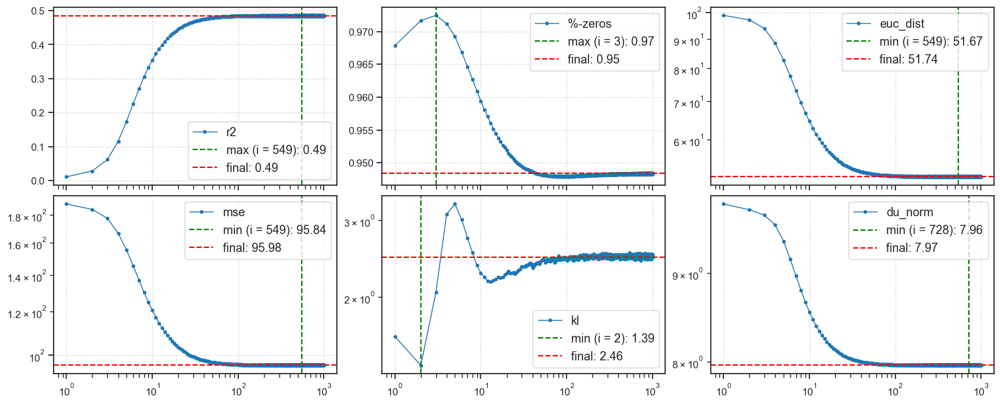
----------------------------------------------------------------------------------------------------
72%|█████████████████████████████ | 29/40 [1:46:02<40:07, 218.84s/it]
[PROGRESS] 'poisson_<ngd|lin>_vH16-wht_t-(16,1)_b-2_kms-(512,1,1)_ipc-recon-prob_dt-False-sigma-True_mach-0_(2025_08_20,16:13) .npy' saved at /home/hadi/Dropbox/git/jb-progress-2025/tmp/results_2025-08
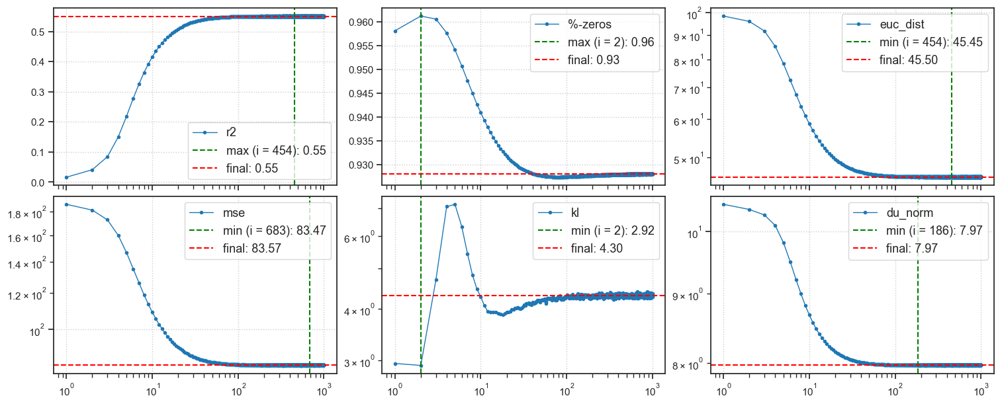
----------------------------------------------------------------------------------------------------
75%|██████████████████████████████ | 30/40 [1:49:41<36:29, 218.92s/it]
[PROGRESS] 'poisson_<ngd|lin>_vH16-wht_t-(16,1)_b-2_kms-(512,1,1)_ipc-recon-prob_dt-True-sigma-False_mach-0_(2025_08_20,16:13) .npy' saved at /home/hadi/Dropbox/git/jb-progress-2025/tmp/results_2025-08
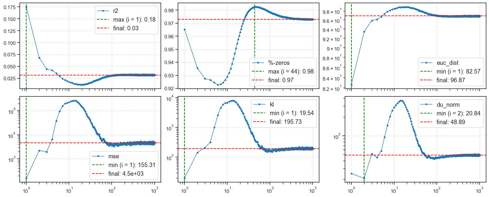
----------------------------------------------------------------------------------------------------
78%|███████████████████████████████ | 31/40 [1:53:20<32:51, 219.02s/it]
[PROGRESS] 'poisson_<ngd|lin>_vH16-wht_t-(16,1)_b-2_kms-(512,1,1)_ipc-recon-prob_dt-True-sigma-True_mach-0_(2025_08_20,16:13). npy' saved at /home/hadi/Dropbox/git/jb-progress-2025/tmp/results_2025-08
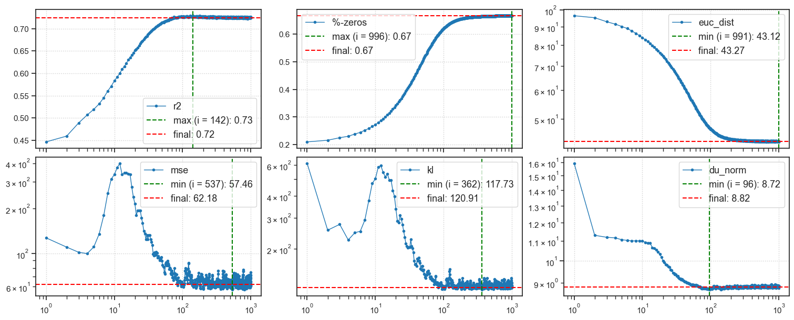
----------------------------------------------------------------------------------------------------
80%|████████████████████████████████ | 32/40 [1:57:00<29:13, 219.20s/it]
[PROGRESS] 'poisson_<ngd|lin>_vH16-wht_t-(16,1)_b-4_kms-(512,1,1)_ipc-recon-mse_dt-False-sigma-False_mach-0_(2025_08_20,16:13) .npy' saved at /home/hadi/Dropbox/git/jb-progress-2025/tmp/results_2025-08
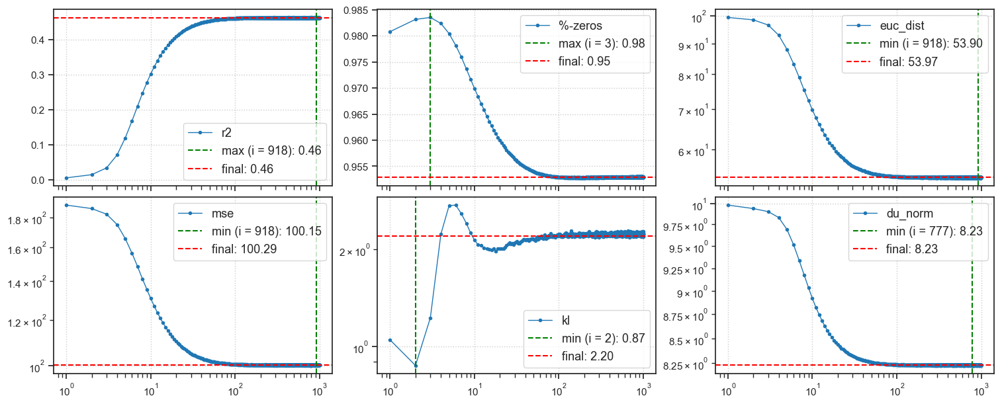
----------------------------------------------------------------------------------------------------
82%|█████████████████████████████████ | 33/40 [2:00:38<25:32, 218.98s/it]
[PROGRESS] 'poisson_<ngd|lin>_vH16-wht_t-(16,1)_b-4_kms-(512,1,1)_ipc-recon-mse_dt-False-sigma-True_mach-0_(2025_08_20,16:13). npy' saved at /home/hadi/Dropbox/git/jb-progress-2025/tmp/results_2025-08
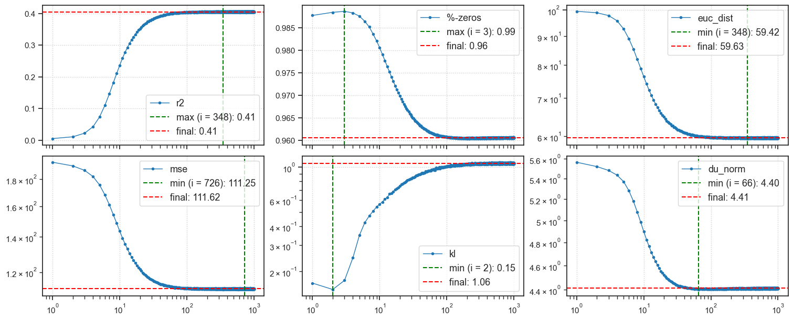
----------------------------------------------------------------------------------------------------
85%|██████████████████████████████████ | 34/40 [2:04:16<21:52, 218.79s/it]
[PROGRESS] 'poisson_<ngd|lin>_vH16-wht_t-(16,1)_b-4_kms-(512,1,1)_ipc-recon-mse_dt-True-sigma-False_mach-0_(2025_08_20,16:13). npy' saved at /home/hadi/Dropbox/git/jb-progress-2025/tmp/results_2025-08
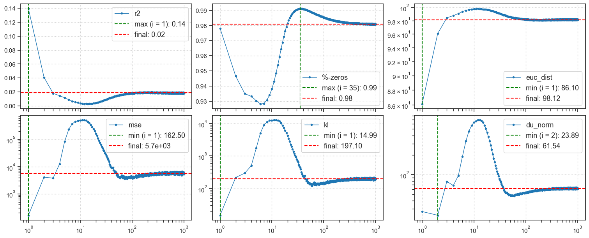
----------------------------------------------------------------------------------------------------
88%|███████████████████████████████████ | 35/40 [2:07:55<18:13, 218.72s/it]
[PROGRESS] 'poisson_<ngd|lin>_vH16-wht_t-(16,1)_b-4_kms-(512,1,1)_ipc-recon-mse_dt-True-sigma-True_mach-0_(2025_08_20,16:13).n py' saved at /home/hadi/Dropbox/git/jb-progress-2025/tmp/results_2025-08
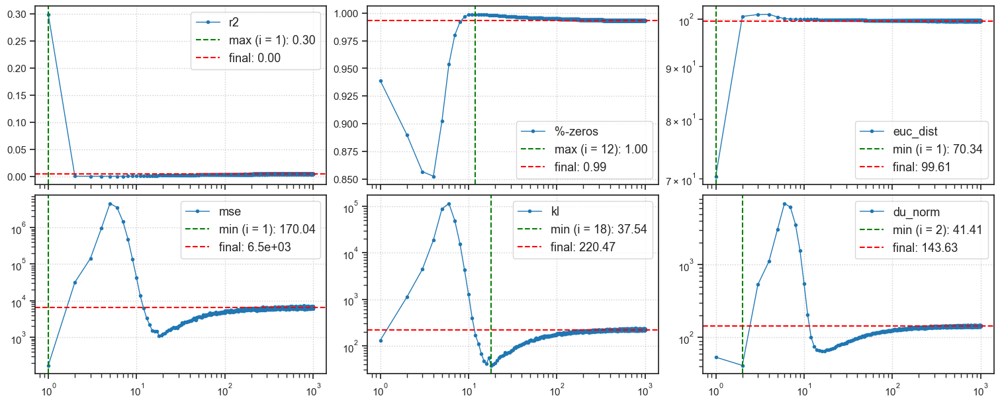
----------------------------------------------------------------------------------------------------
90%|████████████████████████████████████ | 36/40 [2:11:33<14:34, 218.66s/it]
[PROGRESS] 'poisson_<ngd|lin>_vH16-wht_t-(16,1)_b-4_kms-(512,1,1)_ipc-recon-prob_dt-False-sigma-False_mach-0_(2025_08_21,01:00 ).npy' saved at /home/hadi/Dropbox/git/jb-progress-2025/tmp/results_2025-08
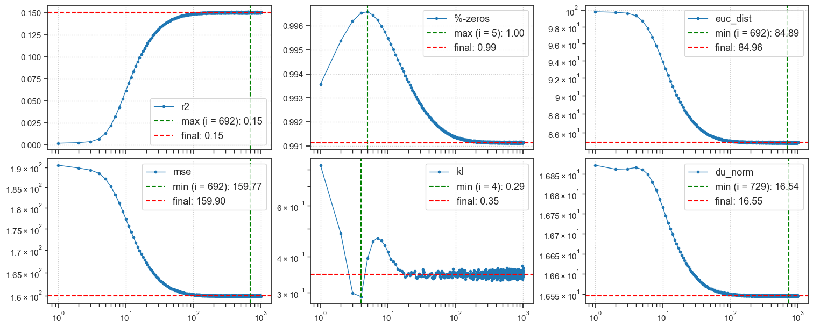
----------------------------------------------------------------------------------------------------
92%|█████████████████████████████████████ | 37/40 [2:15:13<10:56, 218.80s/it]
[PROGRESS] 'poisson_<ngd|lin>_vH16-wht_t-(16,1)_b-4_kms-(512,1,1)_ipc-recon-prob_dt-False-sigma-True_mach-0_(2025_08_21,05:13) .npy' saved at /home/hadi/Dropbox/git/jb-progress-2025/tmp/results_2025-08
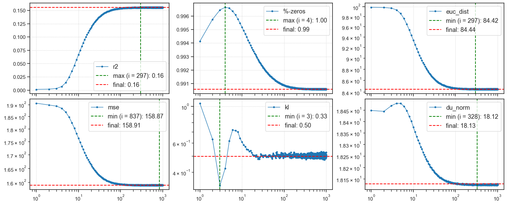
----------------------------------------------------------------------------------------------------
95%|██████████████████████████████████████ | 38/40 [2:18:52<07:17, 218.86s/it]
[PROGRESS] 'poisson_<ngd|lin>_vH16-wht_t-(16,1)_b-4_kms-(512,1,1)_ipc-recon-prob_dt-True-sigma-False_mach-0_(2025_08_21,02:11) .npy' saved at /home/hadi/Dropbox/git/jb-progress-2025/tmp/results_2025-08
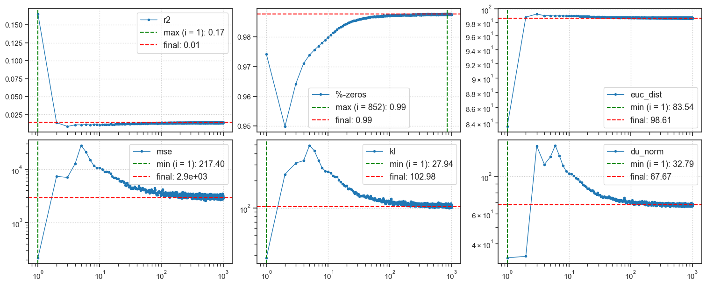
----------------------------------------------------------------------------------------------------
98%|███████████████████████████████████████ | 39/40 [2:22:31<03:38, 218.91s/it]
[PROGRESS] 'poisson_<ngd|lin>_vH16-wht_t-(16,1)_b-4_kms-(512,1,1)_ipc-recon-prob_dt-True-sigma-True_mach-0_(2025_08_21,04:41). npy' saved at /home/hadi/Dropbox/git/jb-progress-2025/tmp/results_2025-08
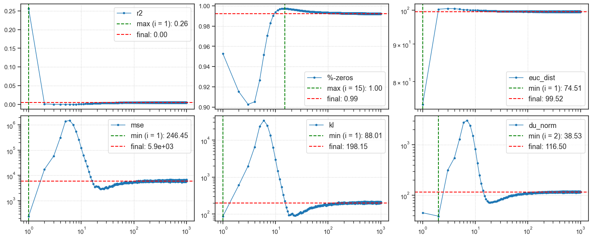
----------------------------------------------------------------------------------------------------
100%|████████████████████████████████████████| 40/40 [2:26:10<00:00, 219.26s/it]
CPU times: user 2h 26min 19s, sys: 6.76 s, total: 2h 26min 26s
Wall time: 2h 26min 10s
Plot features#
for name in fits:
tr, meta = load_model_lite(
pjoin(root, name),
device=device,
shuffle=False,
verbose=False,
strict=False,
)
u0 = tonp(tr.model.layer.u_init[0].squeeze())
load = np.load(
pjoin(results_dir, f'{name}.npy'),
allow_pickle=True,
).item()
str_params = ', '.join([
f"beta = {tr.model.cfg.kl_beta}",
f"recon = '{tr.model.cfg.recon_mode}'",
next(e for e in name.split('_') if 'sigma' in e),
])
str_perf = ' | '.join([
f"r2 = {load['results']['r2'][-1]:0.2f}",
f"zeros = {load['results']['%-zeros'][-1]:0.2f}",
f"euc_dist = {load['results']['euc_dist'][-1]:0.1f}",
])
print(f"params (tbptt = 1):\t\t{str_params}\nperformance:\t\t\t{str_perf} |")
_ = tr.model.show(order=np.argsort(u0))
print('\n')
params (tbptt = 1): beta = 0.1, recon = 'mse', dt-False-sigma-False performance: r2 = 0.75 | zeros = 0.82 | euc_dist = 30.9 |
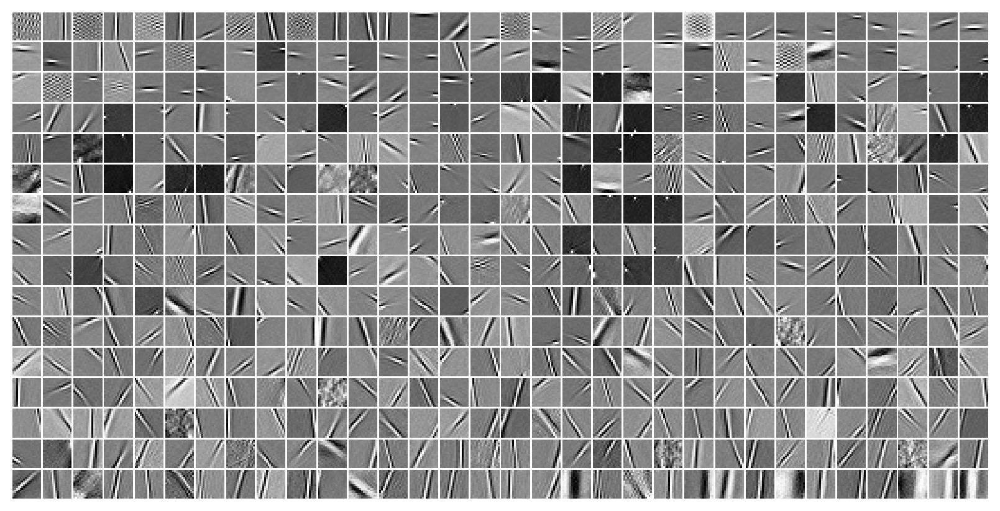
params (tbptt = 1): beta = 0.1, recon = 'mse', dt-False-sigma-True performance: r2 = 0.89 | zeros = 0.69 | euc_dist = 32.5 |
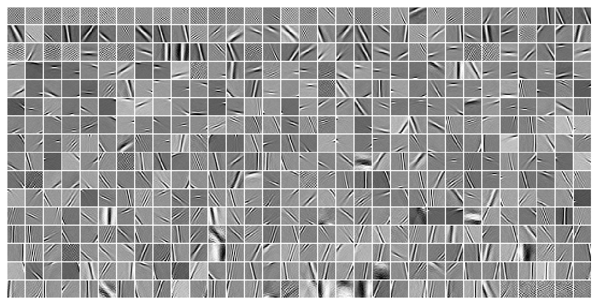
params (tbptt = 1): beta = 0.1, recon = 'mse', dt-True-sigma-False performance: r2 = 0.89 | zeros = 0.69 | euc_dist = 32.6 |
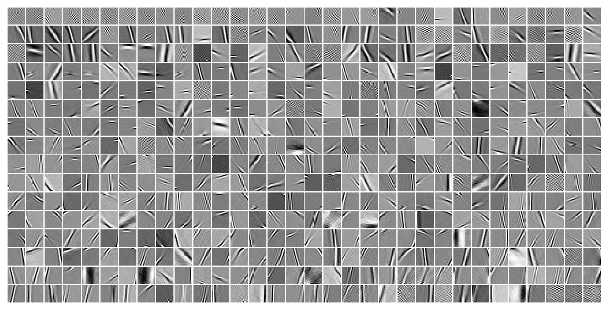
params (tbptt = 1): beta = 0.1, recon = 'mse', dt-True-sigma-True performance: r2 = 0.89 | zeros = 0.69 | euc_dist = 32.6 |
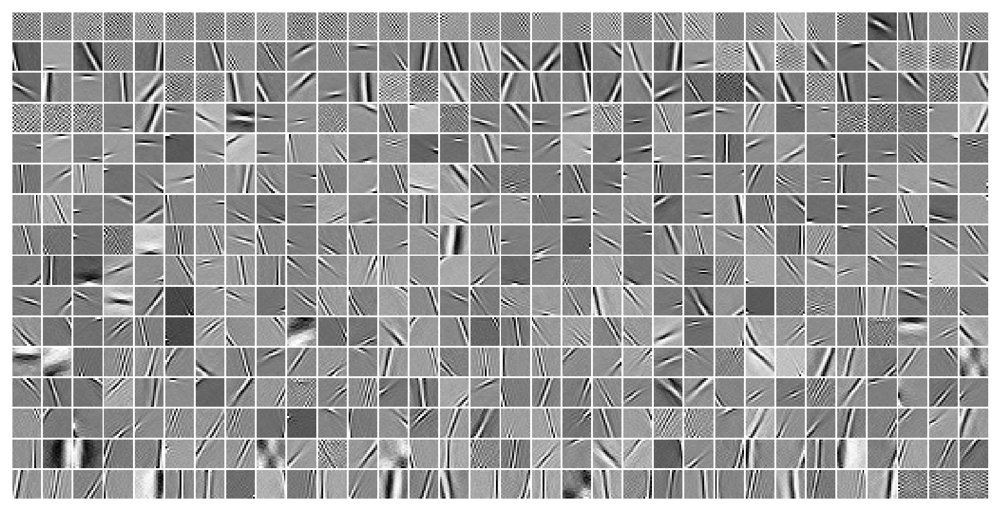
params (tbptt = 1): beta = 0.1, recon = 'prob', dt-False-sigma-False performance: r2 = 0.68 | zeros = 0.84 | euc_dist = 35.8 |
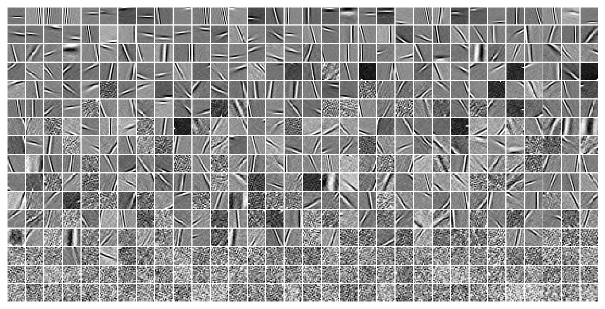
params (tbptt = 1): beta = 0.1, recon = 'prob', dt-False-sigma-True performance: r2 = 0.95 | zeros = 0.58 | euc_dist = 42.2 |
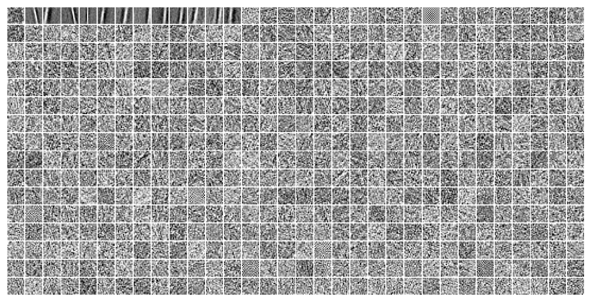
params (tbptt = 1): beta = 0.1, recon = 'prob', dt-True-sigma-False performance: r2 = 0.45 | zeros = 0.88 | euc_dist = 56.7 |
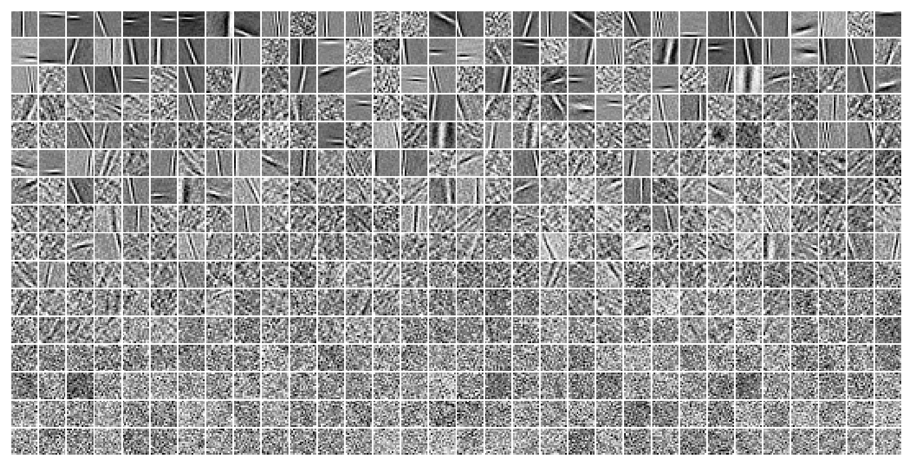
params (tbptt = 1): beta = 0.1, recon = 'prob', dt-True-sigma-True performance: r2 = 0.95 | zeros = 0.58 | euc_dist = 42.4 |
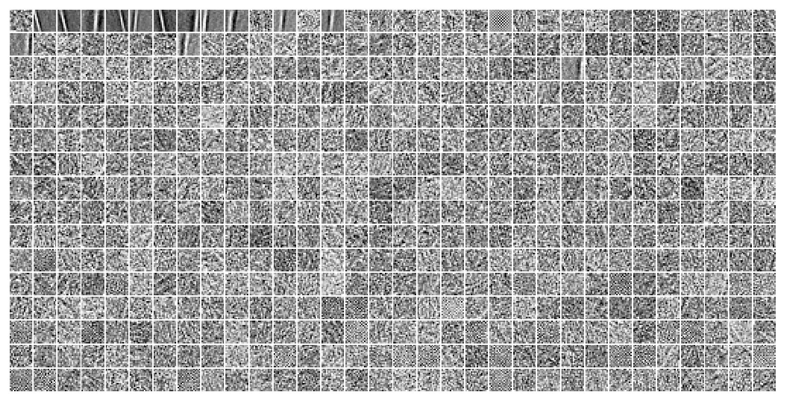
params (tbptt = 1): beta = 0.5, recon = 'mse', dt-False-sigma-False performance: r2 = 0.78 | zeros = 0.78 | euc_dist = 31.1 |
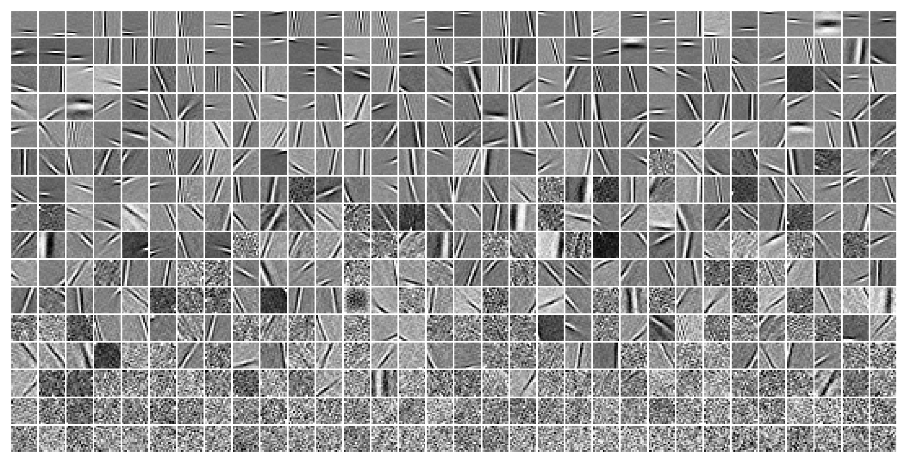
params (tbptt = 1): beta = 0.5, recon = 'mse', dt-False-sigma-True performance: r2 = 0.76 | zeros = 0.75 | euc_dist = 34.3 |
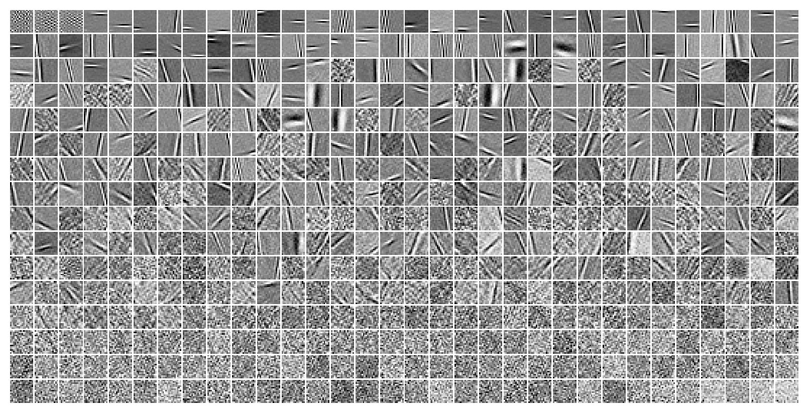
params (tbptt = 1): beta = 0.5, recon = 'mse', dt-True-sigma-False performance: r2 = 0.74 | zeros = 0.79 | euc_dist = 33.1 |
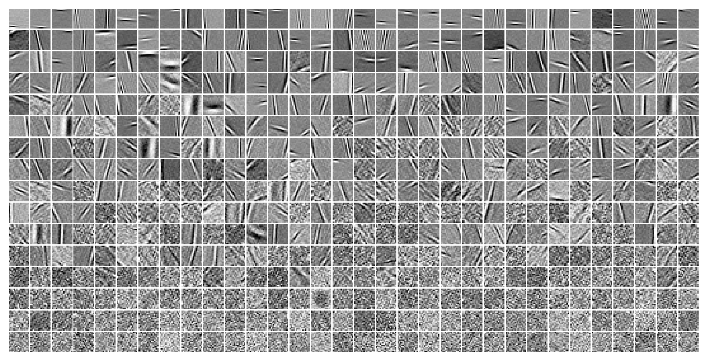
params (tbptt = 1): beta = 0.5, recon = 'mse', dt-True-sigma-True performance: r2 = 0.72 | zeros = 0.78 | euc_dist = 35.4 |
params (tbptt = 1): beta = 0.5, recon = 'prob', dt-False-sigma-False performance: r2 = 0.76 | zeros = 0.83 | euc_dist = 29.4 |
params (tbptt = 1): beta = 0.5, recon = 'prob', dt-False-sigma-True performance: r2 = 0.95 | zeros = 0.61 | euc_dist = 39.2 |
params (tbptt = 1): beta = 0.5, recon = 'prob', dt-True-sigma-False performance: r2 = 0.76 | zeros = 0.83 | euc_dist = 29.8 |
params (tbptt = 1): beta = 0.5, recon = 'prob', dt-True-sigma-True performance: r2 = 0.92 | zeros = 0.62 | euc_dist = 39.2 |
params (tbptt = 1): beta = 1.0, recon = 'mse', dt-False-sigma-False performance: r2 = 0.80 | zeros = 0.79 | euc_dist = 28.4 |
params (tbptt = 1): beta = 1.0, recon = 'mse', dt-False-sigma-True performance: r2 = 0.80 | zeros = 0.80 | euc_dist = 28.4 |
params (tbptt = 1): beta = 1.0, recon = 'mse', dt-True-sigma-False performance: r2 = 0.80 | zeros = 0.79 | euc_dist = 28.5 |
params (tbptt = 1): beta = 1.0, recon = 'mse', dt-True-sigma-True performance: r2 = 0.81 | zeros = 0.79 | euc_dist = 28.7 |
params (tbptt = 1): beta = 1.0, recon = 'prob', dt-False-sigma-False performance: r2 = 0.69 | zeros = 0.87 | euc_dist = 33.8 |
params (tbptt = 1): beta = 1.0, recon = 'prob', dt-False-sigma-True performance: r2 = 0.90 | zeros = 0.67 | euc_dist = 34.7 |
params (tbptt = 1): beta = 1.0, recon = 'prob', dt-True-sigma-False performance: r2 = 0.37 | zeros = 0.88 | euc_dist = 64.1 |
params (tbptt = 1): beta = 1.0, recon = 'prob', dt-True-sigma-True performance: r2 = 0.74 | zeros = 0.62 | euc_dist = 45.9 |
params (tbptt = 1): beta = 2.0, recon = 'mse', dt-False-sigma-False performance: r2 = 0.71 | zeros = 0.85 | euc_dist = 32.4 |
params (tbptt = 1): beta = 2.0, recon = 'mse', dt-False-sigma-True performance: r2 = 0.59 | zeros = 0.90 | euc_dist = 42.1 |
params (tbptt = 1): beta = 2.0, recon = 'mse', dt-True-sigma-False performance: r2 = 0.33 | zeros = 0.87 | euc_dist = 68.2 |
params (tbptt = 1): beta = 2.0, recon = 'mse', dt-True-sigma-True performance: r2 = 0.07 | zeros = 0.93 | euc_dist = 93.0 |
params (tbptt = 1): beta = 2.0, recon = 'prob', dt-False-sigma-False performance: r2 = 0.49 | zeros = 0.95 | euc_dist = 51.7 |
params (tbptt = 1): beta = 2.0, recon = 'prob', dt-False-sigma-True performance: r2 = 0.55 | zeros = 0.93 | euc_dist = 45.5 |
params (tbptt = 1): beta = 2.0, recon = 'prob', dt-True-sigma-False performance: r2 = 0.03 | zeros = 0.97 | euc_dist = 96.9 |
params (tbptt = 1): beta = 2.0, recon = 'prob', dt-True-sigma-True performance: r2 = 0.72 | zeros = 0.67 | euc_dist = 43.3 |
params (tbptt = 1): beta = 4.0, recon = 'mse', dt-False-sigma-False performance: r2 = 0.46 | zeros = 0.95 | euc_dist = 54.0 |
params (tbptt = 1): beta = 4.0, recon = 'mse', dt-False-sigma-True performance: r2 = 0.41 | zeros = 0.96 | euc_dist = 59.6 |
params (tbptt = 1): beta = 4.0, recon = 'mse', dt-True-sigma-False performance: r2 = 0.02 | zeros = 0.98 | euc_dist = 98.1 |
params (tbptt = 1): beta = 4.0, recon = 'mse', dt-True-sigma-True performance: r2 = 0.00 | zeros = 0.99 | euc_dist = 99.6 |
params (tbptt = 1): beta = 4.0, recon = 'prob', dt-False-sigma-False performance: r2 = 0.15 | zeros = 0.99 | euc_dist = 85.0 |
params (tbptt = 1): beta = 4.0, recon = 'prob', dt-False-sigma-True performance: r2 = 0.16 | zeros = 0.99 | euc_dist = 84.4 |
params (tbptt = 1): beta = 4.0, recon = 'prob', dt-True-sigma-False performance: r2 = 0.01 | zeros = 0.99 | euc_dist = 98.6 |
params (tbptt = 1): beta = 4.0, recon = 'prob', dt-True-sigma-True performance: r2 = 0.00 | zeros = 0.99 | euc_dist = 99.5 |
for name in fits:
tr, meta = load_model_lite(
pjoin(root, name),
device=device,
shuffle=False,
verbose=False,
strict=False,
)
u0 = tonp(tr.model.layer.u_init[0].squeeze())
load = np.load(
pjoin(results_dir, f'{name}.npy'),
allow_pickle=True,
).item()
str_params = ', '.join([
f"beta = {tr.model.cfg.kl_beta}",
f"recon = '{tr.model.cfg.recon_mode}'",
next(e for e in name.split('_') if 'sigma' in e),
])
str_perf = ' | '.join([
f"r2 = {load['results']['r2'][-1]:0.2f}",
f"zeros = {load['results']['%-zeros'][-1]:0.2f}",
f"euc_dist = {load['results']['euc_dist'][-1]:0.1f}",
])
print(f"params (t: 16, 16):\t\t{str_params}\nperformance:\t\t\t{str_perf} |")
_ = tr.model.show(order=np.argsort(u0))
print('\n')
params (t: 16, 16): beta = 0.5, recon = 'mse', dt-False-sigma-False performance: r2 = 0.82 | zeros = 0.77 | euc_dist = 28.8 |
params (t: 16, 16): beta = 0.5, recon = 'mse', dt-False-sigma-True performance: r2 = 0.92 | zeros = 0.66 | euc_dist = 35.4 |
params (t: 16, 16): beta = 0.5, recon = 'mse', dt-True-sigma-False performance: r2 = 0.56 | zeros = 0.87 | euc_dist = 46.4 |
params (t: 16, 16): beta = 0.5, recon = 'mse', dt-True-sigma-True performance: r2 = 0.68 | zeros = 0.82 | euc_dist = 37.1 |
params (t: 16, 16): beta = 0.5, recon = 'prob', dt-False-sigma-False performance: r2 = 0.81 | zeros = 0.79 | euc_dist = 28.5 |
params (t: 16, 16): beta = 0.5, recon = 'prob', dt-False-sigma-True performance: r2 = 0.95 | zeros = 0.59 | euc_dist = 41.6 |
params (t: 16, 16): beta = 0.5, recon = 'prob', dt-True-sigma-False performance: r2 = 0.66 | zeros = 0.85 | euc_dist = 37.6 |
params (t: 16, 16): beta = 1.0, recon = 'mse', dt-False-sigma-False performance: r2 = 0.83 | zeros = 0.76 | euc_dist = 29.0 |
params (t: 16, 16): beta = 1.0, recon = 'mse', dt-False-sigma-True performance: r2 = 0.91 | zeros = 0.67 | euc_dist = 33.9 |
params (t: 16, 16): beta = 1.0, recon = 'mse', dt-True-sigma-False performance: r2 = 0.70 | zeros = 0.82 | euc_dist = 34.9 |
params (t: 16, 16): beta = 1.0, recon = 'mse', dt-True-sigma-True performance: r2 = 0.77 | zeros = 0.79 | euc_dist = 31.6 |
params (t: 16, 16): beta = 1.0, recon = 'prob', dt-False-sigma-False performance: r2 = 0.82 | zeros = 0.78 | euc_dist = 28.6 |
params (t: 16, 16): beta = 1.0, recon = 'prob', dt-False-sigma-True performance: r2 = 0.95 | zeros = 0.58 | euc_dist = 42.0 |
params (t: 16, 16): beta = 1.0, recon = 'prob', dt-True-sigma-False performance: r2 = 0.77 | zeros = 0.81 | euc_dist = 30.3 |
params (t: 16, 16): beta = 2.0, recon = 'prob', dt-False-sigma-False performance: r2 = 0.83 | zeros = 0.77 | euc_dist = 28.7 |
params (t: 16, 16): beta = 2.0, recon = 'prob', dt-False-sigma-True performance: r2 = 0.94 | zeros = 0.60 | euc_dist = 40.1 |
params (t: 16, 16): beta = 2.0, recon = 'prob', dt-True-sigma-False performance: r2 = 0.82 | zeros = 0.78 | euc_dist = 28.5 |
params (t: 16, 16): beta = 2.0, recon = 'prob', dt-True-sigma-True performance: r2 = 0.94 | zeros = 0.60 | euc_dist = 40.8 |
params (t: 16, 16): beta = 4.0, recon = 'mse', dt-False-sigma-False performance: r2 = 0.85 | zeros = 0.74 | euc_dist = 29.8 |
params (t: 16, 16): beta = 4.0, recon = 'mse', dt-False-sigma-True performance: r2 = 0.87 | zeros = 0.72 | euc_dist = 30.8 |
params (t: 16, 16): beta = 4.0, recon = 'mse', dt-True-sigma-False performance: r2 = 0.85 | zeros = 0.75 | euc_dist = 29.3 |
params (t: 16, 16): beta = 4.0, recon = 'mse', dt-True-sigma-True performance: r2 = 0.86 | zeros = 0.74 | euc_dist = 29.8 |
params (t: 16, 16): beta = 4.0, recon = 'prob', dt-False-sigma-False performance: r2 = 0.84 | zeros = 0.76 | euc_dist = 28.7 |
params (t: 16, 16): beta = 4.0, recon = 'prob', dt-False-sigma-True performance: r2 = 0.92 | zeros = 0.63 | euc_dist = 38.1 |
params (t: 16, 16): beta = 4.0, recon = 'prob', dt-True-sigma-False performance: r2 = 0.83 | zeros = 0.76 | euc_dist = 29.1 |
params (t: 16, 16): beta = 8.0, recon = 'mse', dt-False-sigma-False performance: r2 = 0.86 | zeros = 0.74 | euc_dist = 29.8 |
params (t: 16, 16): beta = 8.0, recon = 'mse', dt-False-sigma-True performance: r2 = 0.84 | zeros = 0.75 | euc_dist = 29.4 |
params (t: 16, 16): beta = 8.0, recon = 'mse', dt-True-sigma-False performance: r2 = 0.85 | zeros = 0.74 | euc_dist = 30.1 |
params (t: 16, 16): beta = 8.0, recon = 'mse', dt-True-sigma-True performance: r2 = 0.85 | zeros = 0.74 | euc_dist = 30.3 |
params (t: 16, 16): beta = 8.0, recon = 'prob', dt-False-sigma-False performance: r2 = 0.82 | zeros = 0.78 | euc_dist = 28.5 |
params (t: 16, 16): beta = 8.0, recon = 'prob', dt-False-sigma-True performance: r2 = 0.89 | zeros = 0.67 | euc_dist = 35.0 |
params (t: 16, 16): beta = 8.0, recon = 'prob', dt-True-sigma-False performance: r2 = 0.79 | zeros = 0.77 | euc_dist = 31.2 |
params (t: 16, 16): beta = 12.0, recon = 'prob', dt-False-sigma-False performance: r2 = 0.75 | zeros = 0.81 | euc_dist = 31.3 |
params (t: 16, 16): beta = 12.0, recon = 'prob', dt-False-sigma-True performance: r2 = 0.84 | zeros = 0.73 | euc_dist = 31.7 |
params (t: 16, 16): beta = 12.0, recon = 'prob', dt-True-sigma-False performance: r2 = 0.73 | zeros = 0.78 | euc_dist = 34.4 |
params (t: 16, 16): beta = 12.0, recon = 'prob', dt-True-sigma-True performance: r2 = 0.81 | zeros = 0.65 | euc_dist = 39.7 |
params (t: 16, 16): beta = 16.0, recon = 'mse', dt-False-sigma-False performance: r2 = 0.84 | zeros = 0.76 | euc_dist = 28.9 |
params (t: 16, 16): beta = 16.0, recon = 'mse', dt-False-sigma-True performance: r2 = 0.80 | zeros = 0.79 | euc_dist = 28.8 |
params (t: 16, 16): beta = 16.0, recon = 'mse', dt-True-sigma-False performance: r2 = 0.81 | zeros = 0.75 | euc_dist = 31.6 |
params (t: 16, 16): beta = 16.0, recon = 'mse', dt-True-sigma-True performance: r2 = 0.81 | zeros = 0.75 | euc_dist = 31.1 |
params (t: 16, 16): beta = 16.0, recon = 'prob', dt-False-sigma-False performance: r2 = 0.59 | zeros = 0.88 | euc_dist = 42.7 |
params (t: 16, 16): beta = 16.0, recon = 'prob', dt-False-sigma-True performance: r2 = 0.68 | zeros = 0.84 | euc_dist = 35.5 |
params (t: 16, 16): beta = 16.0, recon = 'prob', dt-True-sigma-False performance: r2 = 0.65 | zeros = 0.80 | euc_dist = 40.2 |
params (t: 16, 16): beta = 16.0, recon = 'prob', dt-True-sigma-True performance: r2 = 0.75 | zeros = 0.67 | euc_dist = 41.4 |
params (t: 16, 16): beta = 24.0, recon = 'mse', dt-False-sigma-False performance: r2 = 0.78 | zeros = 0.79 | euc_dist = 30.3 |
params (t: 16, 16): beta = 24.0, recon = 'mse', dt-False-sigma-True performance: r2 = 0.76 | zeros = 0.82 | euc_dist = 29.7 |
params (t: 16, 16): beta = 24.0, recon = 'mse', dt-True-sigma-False performance: r2 = 0.75 | zeros = 0.77 | euc_dist = 34.3 |
params (t: 16, 16): beta = 24.0, recon = 'mse', dt-True-sigma-True performance: r2 = 0.76 | zeros = 0.78 | euc_dist = 32.7 |
params (t: 16, 16): beta = 24.0, recon = 'prob', dt-False-sigma-False performance: r2 = 0.18 | zeros = 0.97 | euc_dist = 82.1 |
params (t: 16, 16): beta = 24.0, recon = 'prob', dt-False-sigma-True performance: r2 = 0.24 | zeros = 0.97 | euc_dist = 76.0 |
params (t: 16, 16): beta = 24.0, recon = 'prob', dt-True-sigma-False performance: r2 = 0.44 | zeros = 0.82 | euc_dist = 58.6 |
params (t: 16, 16): beta = 24.0, recon = 'prob', dt-True-sigma-True performance: r2 = 0.58 | zeros = 0.71 | euc_dist = 51.4 |
params (t: 16, 16): beta = 32.0, recon = 'prob', dt-False-sigma-False performance: r2 = 0.00 | zeros = 0.98 | euc_dist = 100.0 |
params (t: 16, 16): beta = 32.0, recon = 'prob', dt-True-sigma-False performance: r2 = 0.60 | zeros = 0.91 | euc_dist = 41.2 |
params (t: 16, 16): beta = 32.0, recon = 'prob', dt-True-sigma-True performance: r2 = 0.75 | zeros = 0.83 | euc_dist = 30.2 |
params (t: 16, 16): beta = 2.0, recon = 'mse', dt-True-sigma-False performance: r2 = 0.80 | zeros = 0.78 | euc_dist = 30.0 |
params (t: 16, 16): beta = 12.0, recon = 'mse', dt-True-sigma-False performance: r2 = 0.82 | zeros = 0.78 | euc_dist = 28.8 |
params (t: 16, 16): beta = 12.0, recon = 'mse', dt-True-sigma-True performance: r2 = 0.82 | zeros = 0.78 | euc_dist = 28.8 |
params (t: 16, 16): beta = 32.0, recon = 'mse', dt-True-sigma-False performance: r2 = 0.67 | zeros = 0.78 | euc_dist = 39.6 |
params (t: 16, 16): beta = 32.0, recon = 'mse', dt-True-sigma-True performance: r2 = 0.71 | zeros = 0.79 | euc_dist = 35.8 |
params (t: 16, 16): beta = 32.0, recon = 'prob', dt-False-sigma-True performance: r2 = 0.00 | zeros = 0.97 | euc_dist = 100.0 |